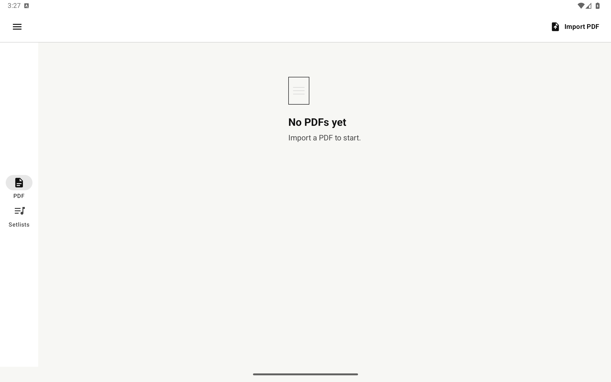

Offline Android app
Your scores.
Your setlist.
Nothing else.
Import PDFs, arrange unlimited setlists, turn pages by touch or pedal, add bookmarks and annotations, and export a marked-up copy. No account, ads, analytics, or Internet permission.

Made for the music stand
- PDF library
- Validated offline copies, search, rename, and safe deletion.
- Unlimited setlists
- Drag scores into performance order and read straight through the whole set.
- Performance reader
- Bookmarks, saved position, Half and Two-page layouts, and pedal keys.
- Find it fast
- Search titles, labels, and bookmarks, then sort by title, import, creation, or last view.
- PDF editor
- Freehand pen and highlighter, straight lines, one compact color picker, text, shapes, undo, redo, and export.
- Backup and restore
- Validated ZIP archives, direct sharing, and non-destructive ScorePDF library import.
- Private by design
- No runtime permissions, server, account, tracking, or hidden upload.

English · Čeština · Slovenčina · Deutsch · Polski
A paper-like interface.
White pages, black type, gray structure, and color only where annotations need it. The original PDF stays untouched. Export creates a separate annotated copy.
Android 10+ · phone and tablet
Room when you have it.
Phones and tablets share the same compact bottom editor. Tablet library screens add a navigation rail and expanded setlist panes.
